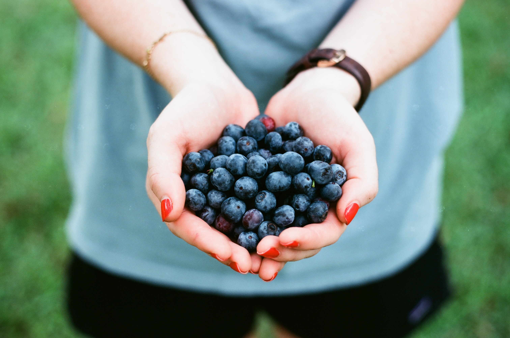

Either because you don’t get enough sleep, you have iron deficiency or you just had a crazy night out last night, getting rid of under eye circle is a struggle for most women on a daily basis. Before you rush to the drugstore and start spending money on countless eye creams and cosmetics, try the tips below for a more natural treatment.
For a quick solution on puffiness and dark circles, cucumber should be your go-to remedy. Cucumber is astringent and lightens the skin, therefore it can naturally help reduce those panda eyes and leave your skin soft and fresh. The cold temperature is a key here. Cut a few thick slices of cucumber – after you let it chill in the refrigerator for a while, put the slices under your eyes ensuring you are covering the bags and leave them for about 10-15 minutes. After you finish, wash the area off with some water.
Potato has almost the same effect as the cucumber. It can naturally help lighten the dark circles and reduce the puffiness. Wash and cut a few slices of potato, place them on or under your eyes and leave them on for 10-20 minutes and then wash it off with some water. [For better results, you can place the potato in the fridge for 30 mins and then use it].
If you don’t have any of the above, a tea bag will also do the trick. The tannin and antioxidants in tea can massively help in reducing swelling and dark circles. Soak two tea bags in warm water and chill them in the fridge for about 20-30 minutes. Place one tea bag on each eye and leave them for about 10-15 minutes. After you finish, wash your face with cold water. TIP: Keep your eyes closed while using the tea bags to avoid getting tea in your eyes.
Is no accident rose water is been used in different skin care products. It’s ingredient does miracles to the skin. It regenerates it and soothes tired eyes. Soak cotton eye pads in rose water for a few minutes and apply them on closed eyes for about 15 minutes. For better results, repeat this twice a day for a few weeks.